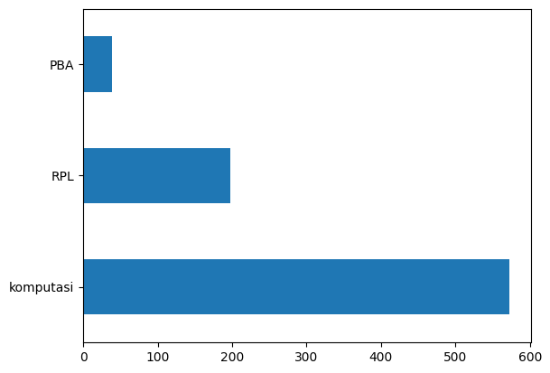

Tugas UTS : Processing Data PTA#
import numpy as np
import pandas as pd
Load Data#
df = pd.read_csv('https://raw.githubusercontent.com/ranianuraini/prosainsdata/main/Data_PTA.csv')
# df = df.drop(['Unnamed: 0.1'], axis=1)
df.head()
| NPM | Judul | Abstrak | Prodi | Label | |
|---|---|---|---|---|---|
| 0 | 40411100468 | PERANCANGAN DAN IMPLEMENTASI SISTEM DATABASE T... | Sistem informasi akademik (SIAKAD) merupaka... | Teknik Informatika | RPL |
| 1 | 40411100476 | APLIKASI KONTROL DAN MONITORING JARINGAN KOMPU... | Berjalannya koneksi jaringan komputer dengan l... | Teknik Informatika | RPL |
| 2 | 40411100480 | RANCANG BANGUN APLIKASI PROXY SERVER UNTUKENKR... | Web server adalah sebuah perangkat lunak serve... | Teknik Informatika | RPL |
| 3 | 70411100070 | SISTEM PENDUKUNG KEPUTUSAN OPTIMASI PENJADWALA... | Penjadwalan kuliah di Perguruan Tinggi me... | Teknik Informatika | komputasi |
| 4 | 80411100115 | SISTEM AUGMENTED REALITY ANIMASI BENDA BERGERA... | Seiring perkembangan teknologi yang ada diduni... | Teknik Informatika | komputasi |
Processing Data Null#
Cek Data Null#
df.isnull().sum()
NPM 0
Judul 6
Abstrak 25
Prodi 0
Label 43
dtype: int64
Terdapat 3 data kosong pada abstrak
Hapus Data Null#
df.dropna(inplace=True)
df.isnull().sum()
NPM 0
Judul 0
Abstrak 0
Prodi 0
Label 0
dtype: int64
Menghapus data Kosong pada abstrak
Cek data not null#
df.count()
NPM 810
Judul 810
Abstrak 810
Prodi 810
Label 810
dtype: int64
Data yang tidak kosong berjumlah 795
Cek Jumlah Class Data#
# Jumlah data pada masing-masing label KBK
# df['Kelas'].value_counts()
df['Label'].value_counts()
komputasi 573
RPL 198
PBA 39
Name: Label, dtype: int64
Grafik data Class#
import matplotlib.pyplot as plt
# df['Kelas'].value_counts().plot(kind='barh')
df['Label'].value_counts().plot(kind='barh')
plt.show()

Cleaning Text#
import re, string
# Text Cleaning
def cleaning(text):
# HTML Tag Removal
text = re.compile('<.*?>|&([a-z0-9]+|#[0-9]{1,6}|#x[0-9a-f]{1,6});').sub('', str(text))
# Case folding
text = text.lower()
# Trim text
text = text.strip()
# Remove punctuations, karakter spesial, and spasi ganda
text = re.compile('<.*?>').sub('', text)
text = re.compile('[%s]' % re.escape(string.punctuation)).sub(' ', text)
text = re.sub('\s+', ' ', text)
# Number removal
text = re.sub(r'\[[0-9]*\]', ' ', text)
text = re.sub(r'[^\w\s]', '', str(text).lower().strip())
text = re.sub(r'\d', ' ', text)
text = re.sub(r'\s+', ' ', text)
# Mengubah text 'nan' dengan whitespace agar nantinya dapat dihapus
text = re.sub('nan', '', text)
return text
df['Judul'] = df['Judul'].apply(lambda x: cleaning(x))
df['Abstrak'] = df['Abstrak'].apply(lambda x: cleaning(x))
df.head()
| NPM | Judul | Abstrak | Prodi | Label | |
|---|---|---|---|---|---|
| 0 | 40411100468 | perancangan dan implementasi sistem database t... | sistem informasi akademik siakad merupakan sis... | Teknik Informatika | RPL |
| 1 | 40411100476 | aplikasi kontrol dan monitoring jaringan kompu... | berjalannya koneksi jaringan komputer dengan l... | Teknik Informatika | RPL |
| 2 | 40411100480 | rancang bangun aplikasi proxy server untukenkr... | web server adalah sebuah perangkat lunak serve... | Teknik Informatika | RPL |
| 3 | 70411100070 | sistem pendukung keputusan optimasi penjadwala... | penjadwalan kuliah di perguruan tinggi merupak... | Teknik Informatika | komputasi |
| 4 | 80411100115 | sistem augmented reality animasi benda bergera... | seiring perkembangan teknologi yang ada diduni... | Teknik Informatika | komputasi |
Export Data Cleaning#
# Checkpoint: Export Hasil Text Cleaning
df.to_csv('PtaCleaning.csv')
Menghapus Missing Value#
# Ubah empty string menjadi NaN value
df = df.replace('', np.nan)
# Cek missing values
df.isnull().sum()
NPM 0
Judul 0
Abstrak 0
Prodi 0
Label 0
dtype: int64
# Remove missing values
df.dropna(inplace=True)
len(df)
810
Menghapus Duplicate Value#
# Cek apakah terdapat duplikasi data pada kolom judul
df[df['Judul'].duplicated()]
| NPM | Judul | Abstrak | Prodi | Label | |
|---|---|---|---|---|---|
| 728 | 120411100015 | sistem pendukung keputusan pemilihan pemain bo... | peningkatan pembinaan permai bola voli terutam... | Teknik Informatika | komputasi |
Cek Data Kolom Judul#
# Remove duplicates judul
df.drop_duplicates(subset=['Judul'], inplace=True)
# Cek apakah masih terdapat duplikasi data pada kolom judul
df[df['Judul'].duplicated()]
| NPM | Judul | Abstrak | Prodi | Label |
|---|
Cek Data Kolom Abstrak#
# Remove duplicates abstrak
df.drop_duplicates(subset=['Abstrak'], inplace=True)
# Cek apakah masih terdapat duplikasi data pada kolom abstrak
df[df['Abstrak'].duplicated()]
| NPM | Judul | Abstrak | Prodi | Label |
|---|
# Checkpoint: Export Hasil Preprocessing
df.to_csv('preprocessed-pta.csv')
# Distribusi Kelas setelah Text Preprocessing
# df['Kelas'].value_counts().plot(kind='barh')
df['Label'].value_counts().plot(kind='barh')
plt.show()

Tokenisasi#
Memecah Kalimat Per kata
import nltk
from nltk.tokenize import word_tokenize
# nltk.download('punkt')
nltk.download('popular')
[nltk_data] Downloading collection 'popular'
[nltk_data] |
[nltk_data] | Downloading package cmudict to /root/nltk_data...
[nltk_data] | Package cmudict is already up-to-date!
[nltk_data] | Downloading package gazetteers to /root/nltk_data...
[nltk_data] | Package gazetteers is already up-to-date!
[nltk_data] | Downloading package genesis to /root/nltk_data...
[nltk_data] | Package genesis is already up-to-date!
[nltk_data] | Downloading package gutenberg to /root/nltk_data...
[nltk_data] | Package gutenberg is already up-to-date!
[nltk_data] | Downloading package inaugural to /root/nltk_data...
[nltk_data] | Package inaugural is already up-to-date!
[nltk_data] | Downloading package movie_reviews to
[nltk_data] | /root/nltk_data...
[nltk_data] | Package movie_reviews is already up-to-date!
[nltk_data] | Downloading package names to /root/nltk_data...
[nltk_data] | Package names is already up-to-date!
[nltk_data] | Downloading package shakespeare to /root/nltk_data...
[nltk_data] | Package shakespeare is already up-to-date!
[nltk_data] | Downloading package stopwords to /root/nltk_data...
[nltk_data] | Package stopwords is already up-to-date!
[nltk_data] | Downloading package treebank to /root/nltk_data...
[nltk_data] | Package treebank is already up-to-date!
[nltk_data] | Downloading package twitter_samples to
[nltk_data] | /root/nltk_data...
[nltk_data] | Package twitter_samples is already up-to-date!
[nltk_data] | Downloading package omw to /root/nltk_data...
[nltk_data] | Package omw is already up-to-date!
[nltk_data] | Downloading package omw-1.4 to /root/nltk_data...
[nltk_data] | Package omw-1.4 is already up-to-date!
[nltk_data] | Downloading package wordnet to /root/nltk_data...
[nltk_data] | Package wordnet is already up-to-date!
[nltk_data] | Downloading package wordnet2021 to /root/nltk_data...
[nltk_data] | Package wordnet2021 is already up-to-date!
[nltk_data] | Downloading package wordnet31 to /root/nltk_data...
[nltk_data] | Package wordnet31 is already up-to-date!
[nltk_data] | Downloading package wordnet_ic to /root/nltk_data...
[nltk_data] | Package wordnet_ic is already up-to-date!
[nltk_data] | Downloading package words to /root/nltk_data...
[nltk_data] | Package words is already up-to-date!
[nltk_data] | Downloading package maxent_ne_chunker to
[nltk_data] | /root/nltk_data...
[nltk_data] | Package maxent_ne_chunker is already up-to-date!
[nltk_data] | Downloading package punkt to /root/nltk_data...
[nltk_data] | Package punkt is already up-to-date!
[nltk_data] | Downloading package snowball_data to
[nltk_data] | /root/nltk_data...
[nltk_data] | Package snowball_data is already up-to-date!
[nltk_data] | Downloading package averaged_perceptron_tagger to
[nltk_data] | /root/nltk_data...
[nltk_data] | Package averaged_perceptron_tagger is already up-
[nltk_data] | to-date!
[nltk_data] |
[nltk_data] Done downloading collection popular
True
Tokenisasi Judul#
# Tokenizing Judul
df['judul_tokens'] = df['Judul'].apply(lambda x: word_tokenize(x))
df[["Judul", "judul_tokens"]].head()
| Judul | judul_tokens | |
|---|---|---|
| 0 | perancangan dan implementasi sistem database t... | [perancangan, dan, implementasi, sistem, datab... |
| 1 | aplikasi kontrol dan monitoring jaringan kompu... | [aplikasi, kontrol, dan, monitoring, jaringan,... |
| 2 | rancang bangun aplikasi proxy server untukenkr... | [rancang, bangun, aplikasi, proxy, server, unt... |
| 3 | sistem pendukung keputusan optimasi penjadwala... | [sistem, pendukung, keputusan, optimasi, penja... |
| 4 | sistem augmented reality animasi benda bergera... | [sistem, augmented, reality, animasi, benda, b... |
Tokenisasi Abstrak#
# Tokenizing Abstrak
df['abstrak_tokens'] = df['Abstrak'].apply(lambda x: word_tokenize(x))
df[["Abstrak", "abstrak_tokens"]].head()
| Abstrak | abstrak_tokens | |
|---|---|---|
| 0 | sistem informasi akademik siakad merupakan sis... | [sistem, informasi, akademik, siakad, merupaka... |
| 1 | berjalannya koneksi jaringan komputer dengan l... | [berjalannya, koneksi, jaringan, komputer, den... |
| 2 | web server adalah sebuah perangkat lunak serve... | [web, server, adalah, sebuah, perangkat, lunak... |
| 3 | penjadwalan kuliah di perguruan tinggi merupak... | [penjadwalan, kuliah, di, perguruan, tinggi, m... |
| 4 | seiring perkembangan teknologi yang ada diduni... | [seiring, perkembangan, teknologi, yang, ada, ... |
Menghapus Stop Word#
nltk.download('stopwords')
[nltk_data] Downloading package stopwords to /root/nltk_data...
[nltk_data] Package stopwords is already up-to-date!
True
from nltk.corpus import stopwords
from itertools import chain
stop_words = set(chain(stopwords.words('indonesian'), stopwords.words('english')))
df['judul_tokens'] = df['judul_tokens'].apply(lambda x: [w for w in x if not w in stop_words])
df['abstrak_tokens'] = df['abstrak_tokens'].apply(lambda x: [w for w in x if not w in stop_words])
Stop Word Judul#
# df[["Judul", "judul_tokens"]].head()
Stop Word Abstrak#
df[["Abstrak", "abstrak_tokens"]].head()
| Abstrak | abstrak_tokens | |
|---|---|---|
| 0 | sistem informasi akademik siakad merupakan sis... | [sistem, informasi, akademik, siakad, sistem, ... |
| 1 | berjalannya koneksi jaringan komputer dengan l... | [berjalannya, koneksi, jaringan, komputer, lan... |
| 2 | web server adalah sebuah perangkat lunak serve... | [web, server, perangkat, lunak, server, berfun... |
| 3 | penjadwalan kuliah di perguruan tinggi merupak... | [penjadwalan, kuliah, perguruan, kompleks, per... |
| 4 | seiring perkembangan teknologi yang ada diduni... | [seiring, perkembangan, teknologi, didunia, mu... |
Stemming#
Mengubah
!pip install sastrawi
Looking in indexes: https://pypi.org/simple, https://us-python.pkg.dev/colab-wheels/public/simple/
Requirement already satisfied: sastrawi in /usr/local/lib/python3.10/dist-packages (1.0.1)
from Sastrawi.Stemmer.StemmerFactory import StemmerFactory
from tqdm.auto import tqdm
tqdm.pandas()
factory = StemmerFactory()
stemmer = factory.create_stemmer()
Stemming Judul#
# # Stemming judul
# df['judul_tokens'] = df['judul_tokens'].progress_apply(lambda x: stemmer.stem(' '.join(x)).split(' '))
# # Hasil stemming judul
# df[["Judul", "judul_tokens"]].head()
Stemming Abstrak#
# Stemming abstrak
df['abstrak_tokens'] = df['abstrak_tokens'].progress_apply(lambda x: stemmer.stem(' '.join(x)).split(' '))
KeyboardInterruptTraceback (most recent call last)
<ipython-input-31-8afd3414c2b0> in <cell line: 2>()
1 # Stemming abstrak
----> 2 df['abstrak_tokens'] = df['abstrak_tokens'].progress_apply(lambda x: stemmer.stem(' '.join(x)).split(' '))
/usr/local/lib/python3.10/dist-packages/tqdm/std.py in inner(df, func, *args, **kwargs)
803 # on the df using our wrapper (which provides bar updating)
804 try:
--> 805 return getattr(df, df_function)(wrapper, **kwargs)
806 finally:
807 t.close()
/usr/local/lib/python3.10/dist-packages/pandas/core/series.py in apply(self, func, convert_dtype, args, **kwargs)
4769 dtype: float64
4770 """
-> 4771 return SeriesApply(self, func, convert_dtype, args, kwargs).apply()
4772
4773 def _reduce(
/usr/local/lib/python3.10/dist-packages/pandas/core/apply.py in apply(self)
1121
1122 # self.f is Callable
-> 1123 return self.apply_standard()
1124
1125 def agg(self):
/usr/local/lib/python3.10/dist-packages/pandas/core/apply.py in apply_standard(self)
1172 else:
1173 values = obj.astype(object)._values
-> 1174 mapped = lib.map_infer(
1175 values,
1176 f,
/usr/local/lib/python3.10/dist-packages/pandas/_libs/lib.pyx in pandas._libs.lib.map_infer()
/usr/local/lib/python3.10/dist-packages/tqdm/std.py in wrapper(*args, **kwargs)
798 # take a fast or slow code path; so stop when t.total==t.n
799 t.update(n=1 if not t.total or t.n < t.total else 0)
--> 800 return func(*args, **kwargs)
801
802 # Apply the provided function (in **kwargs)
<ipython-input-31-8afd3414c2b0> in <lambda>(x)
1 # Stemming abstrak
----> 2 df['abstrak_tokens'] = df['abstrak_tokens'].progress_apply(lambda x: stemmer.stem(' '.join(x)).split(' '))
/usr/local/lib/python3.10/dist-packages/Sastrawi/Stemmer/CachedStemmer.py in stem(self, text)
18 stems.append(self.cache.get(word))
19 else:
---> 20 stem = self.delegatedStemmer.stem(word)
21 self.cache.set(word, stem)
22 stems.append(stem)
/usr/local/lib/python3.10/dist-packages/Sastrawi/Stemmer/Stemmer.py in stem(self, text)
25
26 for word in words:
---> 27 stems.append(self.stem_word(word))
28
29 return ' '.join(stems)
/usr/local/lib/python3.10/dist-packages/Sastrawi/Stemmer/Stemmer.py in stem_word(self, word)
34 return self.stem_plural_word(word)
35 else:
---> 36 return self.stem_singular_word(word)
37
38 def is_plural(self, word):
/usr/local/lib/python3.10/dist-packages/Sastrawi/Stemmer/Stemmer.py in stem_singular_word(self, word)
82 """Stem a singular word to its common stem form."""
83 context = Context(word, self.dictionary, self.visitor_provider)
---> 84 context.execute()
85
86 return context.result
/usr/local/lib/python3.10/dist-packages/Sastrawi/Stemmer/Context/Context.py in execute(self)
35
36 #step 1 - 5
---> 37 self.start_stemming_process()
38
39 #step 6
/usr/local/lib/python3.10/dist-packages/Sastrawi/Stemmer/Context/Context.py in start_stemming_process(self)
78
79 #step 4, 5
---> 80 self.remove_prefixes()
81 if self.dictionary.contains(self.current_word):
82 return
/usr/local/lib/python3.10/dist-packages/Sastrawi/Stemmer/Context/Context.py in remove_prefixes(self)
87 def remove_prefixes(self):
88 for i in range(3):
---> 89 self.accept_prefix_visitors(self.prefix_pisitors)
90 if self.dictionary.contains(self.current_word):
91 return
/usr/local/lib/python3.10/dist-packages/Sastrawi/Stemmer/Context/Context.py in accept_prefix_visitors(self, visitors)
109 for visitor in visitors:
110 self.accept(visitor)
--> 111 if self.dictionary.contains(self.current_word):
112 return self.current_word
113 if self.process_is_stopped:
KeyboardInterrupt:
# Hasil stemming abstrak
df[["Abstrak", "abstrak_tokens"]].head()
| Abstrak | abstrak_tokens | |
|---|---|---|
| 0 | sistem informasi akademik siakad merupakan sis... | [sistem, informasi, akademik, siakad, sistem, ... |
| 1 | berjalannya koneksi jaringan komputer dengan l... | [jalan, koneksi, jaring, komputer, lancar, gan... |
| 2 | web server adalah sebuah perangkat lunak serve... | [web, server, perangkat, lunak, server, berfun... |
| 3 | penjadwalan kuliah di perguruan tinggi merupak... | [jadwal, kuliah, guru, kompleks, masalah, vari... |
| 4 | seiring perkembangan teknologi yang ada diduni... | [iring, kembang, teknologi, dunia, muncul, tek... |
# df['judul_tokens'] = df['judul_tokens'].apply(lambda x: ' '.join(x))
df['abstrak_tokens'] = df['abstrak_tokens'].apply(lambda x: ' '.join(x))
df.to_csv('DataOlah_Pta.csv')
# dataOlah = pd.read_csv('DataOlah_Pta.csv', index_col=0)
dataOlah = pd.read_csv('https://raw.githubusercontent.com/ranianuraini/prosainsdata/main/DataOlah_Pta.csv')
dataOlah.head()
| Unnamed: 0 | NPM | Judul | Abstrak | Prodi | Label | judul_tokens | abstrak_tokens | |
|---|---|---|---|---|---|---|---|---|
| 0 | 0 | 40411100468 | perancangan dan implementasi sistem database t... | sistem informasi akademik siakad merupakan sis... | Teknik Informatika | RPL | ['perancangan', 'implementasi', 'sistem', 'dat... | sistem informasi akademik siakad sistem inform... |
| 1 | 1 | 40411100476 | aplikasi kontrol dan monitoring jaringan kompu... | berjalannya koneksi jaringan komputer dengan l... | Teknik Informatika | RPL | ['aplikasi', 'kontrol', 'monitoring', 'jaringa... | jalan koneksi jaring komputer lancar ganggu ha... |
| 2 | 2 | 40411100480 | rancang bangun aplikasi proxy server untukenkr... | web server adalah sebuah perangkat lunak serve... | Teknik Informatika | RPL | ['rancang', 'bangun', 'aplikasi', 'proxy', 'se... | web server perangkat lunak server berfungsimen... |
| 3 | 3 | 70411100070 | sistem pendukung keputusan optimasi penjadwala... | penjadwalan kuliah di perguruan tinggi merupak... | Teknik Informatika | komputasi | ['sistem', 'pendukung', 'keputusan', 'optimasi... | jadwal kuliah guru kompleks masalah variabel t... |
| 4 | 4 | 80411100115 | sistem augmented reality animasi benda bergera... | seiring perkembangan teknologi yang ada diduni... | Teknik Informatika | komputasi | ['sistem', 'augmented', 'reality', 'animasi', ... | iring kembang teknologi dunia muncul teknologi... |
Modeling Data#
from sklearn.model_selection import train_test_split
X = dataOlah['abstrak_tokens']
y = dataOlah['Label']
Ekstraksi Fitur#
term frequency–inverse document frequency
from sklearn.feature_extraction.text import TfidfVectorizer
vectorizer = TfidfVectorizer()
X_tfidf = vectorizer.fit_transform(X)
# X_test_tfidf = vectorizer.transform(X_test)
terms = vectorizer.get_feature_names_out()
df_tfidfvect = pd.DataFrame(data = X_tfidf.toarray(),columns = terms)
df_tfidfvect
| aalysis | aam | abad | abadi | abai | abdi | ability | abjad | absah | absensi | ... | zara | zat | zcz | zf | zona | zone | zoning | zoom | zucara | zungu | |
|---|---|---|---|---|---|---|---|---|---|---|---|---|---|---|---|---|---|---|---|---|---|
| 0 | 0.0 | 0.0 | 0.0 | 0.0 | 0.0 | 0.0 | 0.0 | 0.0 | 0.0 | 0.0 | ... | 0.0 | 0.0 | 0.0 | 0.0 | 0.0 | 0.0 | 0.0 | 0.0 | 0.0 | 0.0 |
| 1 | 0.0 | 0.0 | 0.0 | 0.0 | 0.0 | 0.0 | 0.0 | 0.0 | 0.0 | 0.0 | ... | 0.0 | 0.0 | 0.0 | 0.0 | 0.0 | 0.0 | 0.0 | 0.0 | 0.0 | 0.0 |
| 2 | 0.0 | 0.0 | 0.0 | 0.0 | 0.0 | 0.0 | 0.0 | 0.0 | 0.0 | 0.0 | ... | 0.0 | 0.0 | 0.0 | 0.0 | 0.0 | 0.0 | 0.0 | 0.0 | 0.0 | 0.0 |
| 3 | 0.0 | 0.0 | 0.0 | 0.0 | 0.0 | 0.0 | 0.0 | 0.0 | 0.0 | 0.0 | ... | 0.0 | 0.0 | 0.0 | 0.0 | 0.0 | 0.0 | 0.0 | 0.0 | 0.0 | 0.0 |
| 4 | 0.0 | 0.0 | 0.0 | 0.0 | 0.0 | 0.0 | 0.0 | 0.0 | 0.0 | 0.0 | ... | 0.0 | 0.0 | 0.0 | 0.0 | 0.0 | 0.0 | 0.0 | 0.0 | 0.0 | 0.0 |
| ... | ... | ... | ... | ... | ... | ... | ... | ... | ... | ... | ... | ... | ... | ... | ... | ... | ... | ... | ... | ... | ... |
| 804 | 0.0 | 0.0 | 0.0 | 0.0 | 0.0 | 0.0 | 0.0 | 0.0 | 0.0 | 0.0 | ... | 0.0 | 0.0 | 0.0 | 0.0 | 0.0 | 0.0 | 0.0 | 0.0 | 0.0 | 0.0 |
| 805 | 0.0 | 0.0 | 0.0 | 0.0 | 0.0 | 0.0 | 0.0 | 0.0 | 0.0 | 0.0 | ... | 0.0 | 0.0 | 0.0 | 0.0 | 0.0 | 0.0 | 0.0 | 0.0 | 0.0 | 0.0 |
| 806 | 0.0 | 0.0 | 0.0 | 0.0 | 0.0 | 0.0 | 0.0 | 0.0 | 0.0 | 0.0 | ... | 0.0 | 0.0 | 0.0 | 0.0 | 0.0 | 0.0 | 0.0 | 0.0 | 0.0 | 0.0 |
| 807 | 0.0 | 0.0 | 0.0 | 0.0 | 0.0 | 0.0 | 0.0 | 0.0 | 0.0 | 0.0 | ... | 0.0 | 0.0 | 0.0 | 0.0 | 0.0 | 0.0 | 0.0 | 0.0 | 0.0 | 0.0 |
| 808 | 0.0 | 0.0 | 0.0 | 0.0 | 0.0 | 0.0 | 0.0 | 0.0 | 0.0 | 0.0 | ... | 0.0 | 0.0 | 0.0 | 0.0 | 0.0 | 0.0 | 0.0 | 0.0 | 0.0 | 0.0 |
809 rows × 6442 columns
X_tfidf.shape
(809, 6442)
terms = vectorizer.get_feature_names_out()
sums = X_tfidf.sum(axis=0)
data = []
for col, term in enumerate (terms):
data.append((term, sums[0,col]))
ranking = pd.DataFrame(data, columns=['term', 'rank'])
print(ranking.sort_values('rank', ascending=False))
term rank
5376 sistem 32.339549
1173 data 28.965659
939 citra 28.863548
3609 metode 28.713771
2085 hasil 27.121133
... ... ...
3887 numberabstrakberbagai 0.051212
2479 jarimenggunakan 0.051212
5160 seirver 0.040808
264 analyzer 0.040808
6364 wireshark 0.040808
[6442 rows x 2 columns]
Training Data#
KNN
from sklearn.neighbors import KNeighborsClassifier
knn = KNeighborsClassifier(n_neighbors=3)
model_knn = knn.fit(X_train,y_train)
predictions_knn = model_knn.predict(X_test)
---------------------------------------------------------------------------
NameError Traceback (most recent call last)
<ipython-input-40-b2a0cd238608> in <cell line: 2>()
1 knn = KNeighborsClassifier(n_neighbors=3)
----> 2 model_knn = knn.fit(X_train,y_train)
3 predictions_knn = model_knn.predict(X_test)
NameError: name 'X_train' is not defined
NAive Baiyes
from sklearn.naive_bayes import GaussianNB
bayes = GaussianNB()
model_bayes = bayes.fit(X_train,y_train)
predictions_bayes = model_bayes.predict(X_test)
Evaluasi#
KNN
# Report the confusion matrix
from sklearn import metrics
print(metrics.confusion_matrix(y_test,predictions_knn))
# Print a classification report
print(metrics.classification_report(y_test,predictions_knn))
from sklearn.metrics import accuracy_score, precision_score, recall_score, f1_score
# Print the overall metrics
print('Accuracy score : ', accuracy_score(y_test, predictions_knn))
print('Precision score : ', precision_score(y_test, predictions_knn, average='weighted'))
print('Recall score : ', recall_score(y_test, predictions_knn, average='weighted'))
print('F1 score : ', f1_score(y_test, predictions_knn, average='weighted'))
Naive Baiyes
# Report the confusion matrix
from sklearn import metrics
print(metrics.confusion_matrix(y_test,predictions_bayes))
# Print a classification report
print(metrics.classification_report(y_test,predictions_bayes))
from sklearn.metrics import accuracy_score, precision_score, recall_score, f1_score
# Print the overall metrics
print('Accuracy score : ', accuracy_score(y_test, predictions_bayes))
print('Precision score : ', precision_score(y_test, predictions_bayes, average='weighted'))
print('Recall score : ', recall_score(y_test, predictions_bayes, average='weighted'))
print('F1 score : ', f1_score(y_test, predictions_bayes, average='weighted'))
Akurasi Model
from sklearn.metrics import accuracy_score, precision_score, recall_score, f1_score
print('KNN')
print('Accuracy score : ', accuracy_score(y_test, predictions_knn))
print('Precision score : ', precision_score(y_test, predictions_knn, average='weighted'))
print('Recall score : ', recall_score(y_test, predictions_knn, average='weighted'))
print('F1 score : ', f1_score(y_test, predictions_knn, average='weighted'))
print('')
print('Naive Bayes')
print('Accuracy score : ', accuracy_score(y_test, predictions_bayes))
print('Precision score : ', precision_score(y_test, predictions_bayes, average='weighted'))
print('Recall score : ', recall_score(y_test, predictions_bayes, average='weighted'))
print('F1 score : ', f1_score(y_test, predictions_bayes, average='weighted'))
Export Model#
dump(model_knn, filename="model_knn.joblib")
dump(model_bayes, filename="model_bayes.joblib")
dump(vectorizer, filename="vectorizer_model_abstrak.joblib")